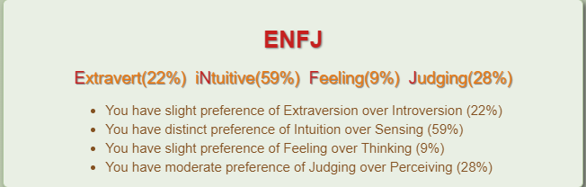
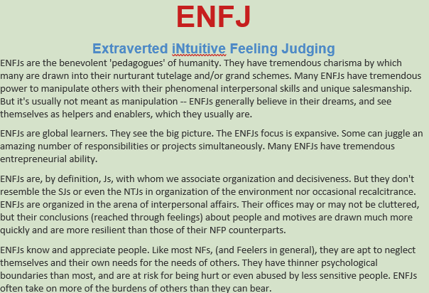

Name: Vanessa Khalil
Student Number: 3779052
Email Address: s3770952@student.rmit.edu.au

My name is Vanessa Khalil. Nine times out of ten, the first statements that people make when they first meet me is, “You’re not Lebanese.” My response is normally something along the lines of, “well who would have thought, thank you for that information.” In actual fact, my background is Australian with English and Irish born parents and I happened to marry a crazy Palestinian and had a couple of half-crazy Palestinian children (Aleksandar and Amira), hence the Middle Eastern surname.
I have only ever spoken English, however after being married into a Middle Eastern family for 16 years, I have picked up some of the Arabic language and have learned the basic skill of reading and writing. My children however, are more fluent than me and have picked up the language beautifully.
I am not really that much of an interesting person compared to so many other people around me. However, something that is unique to me is that I do know how to fly a small aircraft. When I was 15 years old, I went on an aeroplane for the first time. As we were flying through the air, I told my parents that I would learn to fly one of these one day. They laughed, my sisters laughed and I laughed as it was some kind of joke, however less than a year later for my 16th Birthday, my Dad bought me my first flying lesson for where I learnt to fly a Cessna 152 (a small two-seater aerobatic plane). My dream one day is to own my own Cessna and teach my kids to fly.
I am a trainee Financial Planner for a company in the Gold Coast and due to the changing legalisations with FASEA, in order to continue practicing, I am required to complete a degree in Financial Planning. One of the subjects that was compulsory for me to do is this subject, Information Technology. Initially my thoughts for this subject, were not great. I did say to my boss on one occasion, “I will not be sitting with a client and then ask them if they wanted a website designed with their retirement projections.” However, the more that I have been reading into the subject there has been some interest forming as IT is more than just getting angry at my computer on a daily basis. As technology has been advancing, so has IT. In financial planning world, there is a whole technology sector that investors invest in. Managed Fund Investment Committees base their investment strategies on the ‘disruption of technology’ and ‘tech booms.’ IT surrounds us and as generation after generation progresses so will IT. And whether you are a Financial Planner, a teacher or someone in the medical field, we all need to have a level of understanding of IT. Essentially as we are today, if IT stops, so does the world.
 My Ideal Job
My Ideal Job
My ideal job would be working as a Senior Financial Adviser (as described in the job advertisement above), to potentially own my own business or be a partner for an existing Financial Planning Practice.
The job advertised are seeking a Senior Wealth Adviser which is another name for Senior Financial Adviser.
The recruiter is seeking a financial adviser who has extensive experience in wealth management for portfolios that exceed $1million per client. They have stipulated that they would require the financial adviser to have experience in Risk Insurance (this relates to personal insurances such as Life Insurance and Income Protection), SMSF (which is a Self-Managed Super Fund - someone who owns their own super fund as opposed to using a platform like Australian Super. These are usually heavily regulated and must be owned by two individuals such as a Husband and Wife under a corporate trustee). The Financial Adviser must also have experience in providing investment advice such as investing into shares and/or managed funds in the most tax effective manner.
The position is ideal to me as I have experience in the above. Financial Planning is my career and may passion. Not as extensive as the recruiter requires, however that is my goal to work towards. I have no intention to leave my current employer, however this is my ultimate goal. To build up my career to be a Senior Financial Adviser/Wealth Manager.
For me to grow further in my career and reach the level of job description in the job advertisement, I will need further experience. I already have a strong level experience now. It will be all about enhancing my experience. Work more closely with clients, expand my education through different courses and other areas of study. Attend regular conferences and professional developments and expand my client data base in order to experience all different areas of advice. And most importantly, continue to service my existing clients and working along side my boss who will continue to teach me new skills every day.
I am an EFNJ or if you want to know the long version, it stands for Extraverted, Intuitive Feeling Judging. In other words, I am tremendously charismatic
In reality though, the Myer-Briggs test has brought to my attention, qualities and some 'not-so-qualities' that I have never really paid attention to.
  Click here to read my Myers-Briggs report further - it is quite interesting
Visual style is learning by seeing. You learn visually whenever you gain information from sight. This includes more than just the viewing of pictures and your surroundings. Visual learning also encompasses the written word. Visual learners benefit greatly from teaching that utilizes illustrations, charts, diagrams, videos, etc. They often feel a need to convert spoken instruction into visual form by taking notes.
Characteristics of a Visual LearnerI believe that these tests are rather accurate, well for me anyway, particularly the Myer-Briggs test. The tests provide some insight into my personality not just in my personal life but for my work and study life as well. It is almost like getting a bird’s eye view of your own personality. I received the personality type EFNJ for the Myers-Briggs test, it explains one of key weaknesses in detail which is my inability to successfully confront conflict and express my feelings and opinions, in other words I avoid it whenever I can. This has negatively impacted in past confrontations or where I am situations, I do not want to be in in eagerness to please. This was a stand out of my results. I already knew I had this weakness, but for it to come up in a personality test does bring it home. I definitely do have a large eagerness to please and will bend over backwards where I can. I am a natural born leader though and always find myself leading groups when I am a part of one.
The learning style test is accurate also, I am a visual learner and learn extremely well in interactive environments. I do tend to struggle where I am only particularly if the skill of the writer is lacking in the ability to write in laments terms.
Working on my weaknesses will that have been brought to my attention as a result of the tests. I especially need to build the confidence to successfully address conflict as opposed to running from it. This will help strengthen my relationship building skills in a team working environment.
I would normally say form a group with like minded people who have the same level of eagerness to excel as I do, however, in an online environment it wold be difficult to achieve. So, for me in this situation it would be adapting to my group while still acting out my willingness to please and excel. I would learn to resolve conflict (hopefully there will be none) and having the confidence to voice my opinions and feelings where needed.
A website or App which I would call “Buddy.” A website/app that is meant to assist people from suffering mental illness or for people that just need someone to talk to or feel that they need a friend.
In 2017 the suicide rate in Australia was 12.7% per 100,000 deaths. With debt levels rising across Australia mental health is predicted to decline and suicide rates to rise by up to 40% by 2030. After recently losing a very close friend and an Uncle to suicide this holds close to my heart.
Since technology is advancing rapidly, more and more people are doing things online, we are becoming more and more absent from real life human interaction. As time moves on, the less we will be physically engaging with people, meeting new people and having conversations with strangers will eventually significantly reduce further, its inevitable. While it is not necessarily a bad thing, the strength of our mental health relies on human to human interaction, we are social beings and strive on communication with each other.
If my project is successful, users suffering a mental health disorders such as depression and/or anxiety as an example will feel that they have somewhere to go to as a safe zone. Somewhere to vent their frustrations and have an outlet through one or many of the sections available on the app/website. New friendships and support groups will be formed. Will the impact of my project reduce the amount of suicides? In a perfect world, yes, but I need to be realistic. While a reduction in suicide rates due to my app/website would be amazing that is not the ultimate goal of my project. The fundamental goal of my project is for users to know that they are not alone in this world. That they can have a safe zone to hide out in. My project is designed to create that ‘safe zone environment in a digital world where technology is advancing to where everything is done online. If my project positively impacts the life of just one person to start off with, then the project in my eyes was successful.